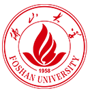

电梯安全评估系统
ELEVATOR SAFETY ASSESSMENT SYSTEM
依据 GB/T 42615-2023《在用电梯安全评估规范》
×
电梯安全评估系统
请使用您的账号登录
用户名
口令
登 录
广东省特种设备检测研究院佛山检测院 · 佛山大学
基本信息及设备参数
-- 从历史记录恢复 --
请填写委托单位、使用单位、设备信息及技术参数（带
*
为必填）
基本信息
委托单位名称
使用单位名称
安装地点
设备类别
设备品种
型号
产品编号
使用登记证编号
制造日期
制造单位名称
改造单位名称
改造日期
维护保养单位名称
设备技术参数
额定载重量
kg
额定速度
m/s
层/站/门数
层
站
门
控制方式
评估仪器
评估项目
逐项核验，标记不合格项并勾选具体异常状态
检测统计
0
项
0
合格
0
异常
生成 AI 报告
恢复默认
正在从知识图谱加载...
评估报告
导出 PDF
导出 Word
用户管理
✕
加载中...
新增用户
用户名
姓名
初始口令
角色
检验员
管理员
关闭
新增用户
修改口令
✕
原口令
新口令
修改成功后需要重新登录。
取消
确定修改
英
提示
取消
确定